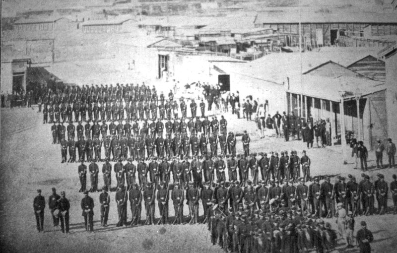
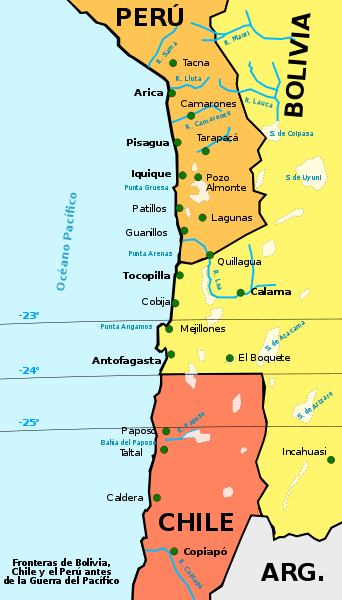

La Guerra del Pacífico
El 14 de febrero de 1879, la armada chilena desembarcó en el puerto de Antofagasta, entonces en territorio de Bolivia. Comenzaba de esa forma la guerra del Pacífico, un conflicto que involucraría a Chile, Bolivia y Perú, y que tendría como última consecuencia para Bolivia la pérdida de su única salida al mar, la provincia del Litoral, desde entonces en manos chilenas. El detonante del conflicto fue la explotación de los depósitos de salitre, una materia prima que adquirió tal importancia económica a finales del siglo XIX que se la llamaba el «oro blanco». El salitre o nitrato de Chile es un nitrato sódico natural que se obtiene mediante el refinado del caliche, un tipo de sal que se encuentra bajo determinadas superficies desérticas, y cuyos mayores (y casi únicos) yacimientos se concentraban en la región fronteriza entre Chile, Bolivia y Perú. La utilidad del salitre como fertilizante y para la fabricación de explosivos provocó una fuerte demanda que lo convirtió en uno de los productos más codiciados por el comercio y la industria internacionales. La disputa por el salitre se añadía al conflicto que enfrentaba a los tres países por el comercio de otro apreciado fertilizante exclusivo de la misma región, el guano, procedente de los excrementos de animales de la zona. La actividad salitrera, circunscrita durante largo tiempo a la provincia peruana de Tarapacá, recibió un impulso significativo gracias a José Santos Ossa. En la década de 1860, este empresario minero chileno descubrió importantes depósitos de salitre en la región de Atacama, entre los que destacaba el Salar del Carmen, ampliando la explotación del mineral a la provincia boliviana del Litoral. Junto a otros socios chilenos, y gracias al capital de los comerciantes ingleses instalados en Valparaíso, Ossa fundó la compañía Melbourne Clark y Cía y obtuvo una concesión del gobierno boliviano para desarrollar la explotación por quince años. Sobre el campamento provisional de la compañía minera se levantaría la futura ciudad de Antofagasta, constituida como municipio en 1872. Dos años después, Chile y Bolivia firmaban el tratado de límites, un acuerdo que definía su frontera común y ponía fin a un contencioso territorial iniciado en 1840 y centrado en los derechos de explotación de ambos países sobre los depósitos de guano de la zona. Al mismo tiempo se establecía la exención del pago de nuevos impuestos por parte de la Melbourne Clark al gobierno boliviano durante veinte años.
Chilenos en Antofagasta
Pese a la firma del tratado, Chile continuaría en los años siguientes con su política expansionista, alentando la búsqueda de nuevos yacimientos fuera de sus fronteras. La paz inicial que siguió al tratado no duraría mucho tiempo. La Melbourne Clark había terminado la construcción del ferrocarril que unía la costa con el Salar del Carmen. Los yacimientos de salitre en Bolivia controlados por los chilenos se extendían ya por todo el litoral próximo a Antofagasta. La compañía, ya sin la participación de José Santos Ossa, se transformaría en la Compañía de Salitres y Ferrocarril de Antofagasta; sus máximos accionistas eran el empresario chileno Agustín Edwards y la empresa británica Gibbs & Cía, que hasta el momento había cimentado su actividad en la explotación guanera. El tratado de 1874 había frenado por el momento la amenaza a la soberanía de Bolivia sobre su territorio, pero cuando al auge de la industria salitrera se unió el descubrimiento de minas de plata en su costa, el número de trabajadores chilenos atraídos hasta la provincia del Litoral aumentó de forma considerable. A finales de los años setenta, la población de Antofagasta estaba constituida ya por un 93 por ciento de chilenos frente a sólo un dos por ciento de bolivianos. De esta forma, el Departamento del Litoral sólo conservaba de su bolivianidad la situación jurídica y un pequeño destacamento de soldados. En 1878, la Asamblea Nacional de Bolivia, ante el auge de las empresas salitreras anglo-chilenas y el escaso beneficio que los bolivianos sacaban de la explotación, decidió gravar con diez centavos las exportaciones de cada cien kilos de salitre de la Compañía. La empresa denunció ante el Congreso de Chile esa agresión a sus intereses, afirmando que violaba el tratado territorial entre ambos países. No sólo eso: el administrador general de la Compañía, el inglés George Hicks, llegó a sugerir que se presentaba una magnífica oportunidad para Chile de liberar al Pacífico «de aquella plaga de bolivianos». Cabe señalar que las conexiones entre la empresa salitrera y el gobierno chileno eran notorias: José Francisco Vergara, ministro del Interior, o Rafael Sotomayor, ministro de Guerra, así como diversos congresistas, formaban parte de su accionariado.

Hacia la Guerra
Finalmente, con el apoyo del gobierno chileno, la Compañía de Salitres de Antofagasta se negó a pagar el impuesto exigido por el Estado boliviano, alegando que se trataba de una violación de los acuerdos existentes. El gobierno boliviano respondió ordenando el embargo y la subasta de sus bienes. A su vez, Perú también había decretado expropiaciones de empresas chilenas relacionadas con el guano y el salitre. Después de que fracasaran los intentos de resolver el conflicto mediante un arbitraje, los tres países se encaminaron irremediablemente a la guerra. El 14 de febrero de 1879, fecha planeada para la expropiación y subasta pública de los bienes de la Compañía de Salitres, el ejército chileno ocupó la ciudad de Antofagasta antes de que la puja pudiese llevarse a cabo. En los años anteriores, Chile se había convertido en una potencia naval gracias al apoyo de Gran Bretaña, que había financiado y construido gran parte de su armada. Por ello, apenas dos meses después del estallido de la guerra los chilenos se habían apoderado de todo el litoral de Antofagasta. El conflicto duraría aún cuatro años más, en los que se sucedieron las escaramuzas, ocupaciones y fluctuaciones características de toda guerra. Pero un hecho permanecería inmutable: Bolivia perdió para siempre su salida al mar.
Bolivia se queda sin costa
La guerra se clausuró de forma oficial con la tregua firmada por Chile y Bolivia el 4 de abril de 1884. Veinte años después, el tratado de La Paz y la Amistad reconoció a Chile la cesión a perpetuidad del litoral boliviano, y en compensación se daba a Bolivia el derecho de libre tránsito de sus bienes y mercancías por los puertos chilenos. Sin embargo, pronto se hizo patente la disconformidad boliviana con el acuerdo, y desde 1910 sus sucesivos gobiernos no han cesado de reclamar el derecho a una salida al Pacífico. En 2018, el Tribunal Internacional de Justicia de La Haya, máximo órgano jurisdiccional de las Naciones Unidas, dictaminó que Chile «no está jurídicamente obligado a facilitar el acceso» de Bolivia al mar, pero el Estado boliviano afirmó enseguida que nunca renunciaría a ese derecho.
Si no entendiste bien puedes ver los siguientes videos
Haz clic en los enlaces para ver los videos en YouTube